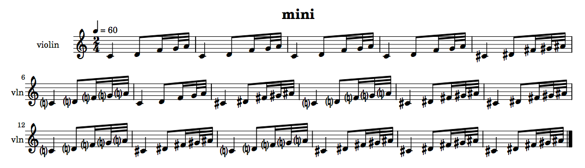
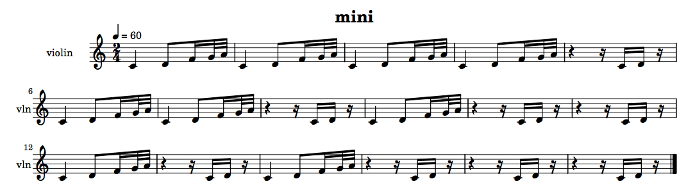

Fibonacci functions
+ Associated example files
NB: An exercise relating to the material covered in this tutorial can be found on the Exercises page.
slippery chicken comes with a number of predefined functions for algorithmic data generation and manipulation, one group of which has its basis in numerical series with Fibonacci relationships. A Fibonacci sequence, named after the 13th-century Italian mathematician Leonardo Fibonacci, is a series of numbers in which each number is the sum of the two preceding numbers in the series, such as (0 1 1 2 3 5 8 13 ...)
+ fibonacci-transition and fibonacci-transitions
fibonacci-transition
The slippery chicken
function fibonacci-transition returns a list in which
one repeating element gradually transitions to, and is replaced by, a
second repeating element at intervals determined by Fibonacci
numbers.
The function first internally determines a list of decreasing Fibonacci numbers, for example (13 8 5 3 2 1). The first element begins repeating and at the 13th repetition is replaced once by the second element. The first element repeats again is then replaced once again at the 8th repetition by the second element, and so on. When the Fibonacci number 1 is reached, the full transition has been completed and the remainder of the new list consists of repetitions of only the second element.
The fibonacci-transition function can be called with
either one or three arguments. In the first case, it will transition
from 0 to 1 over the specified number of
total repetitions:
(fibonacci-transition 50)
=> (0 0 0 0 0 0 0 0 0 0 0 0 1 0 0 0 0 0 0 0 1 0 0 0 0 1 0 0 1 0 1 0 1 0 1 1 0 1
1 1 1 0 1 1 1 1 1 1 1 1)
If the user would like to transition between two items other
than 0 and 1, this can be done by
specifying the two items as the second and third arguments to the
function.
(fibonacci-transition 50 's 'e) => (S S S S S S S S S S S S E S S S S S S S E S S S S E S S E S E S E S E E S E E E E S E E E E E E E E)
fibonacci-transitions
This same concept can be used to produce a series of consecutive
transitions between multiple elements, by using
the fibonacci-transitions (plural) function. This
function also takes as its first argument the number of repetitions
over which the entire transition is to occur.
The second argument can either be a single number or a list of
items. If the second argument is a single number, the method will
apply the fibonacci-transition function between each of
the sequential numbers starting at 0 and ending at one
below the number specified:
(fibonacci-transitions 76 4)
=> (0 0 0 0 0 0 0 1 0 0 0 0 1 0 0 1 0 1 0 1 1 0 1 0 1 1 1 1 1 1 1 2 1 1 2 1 2 1
2 2 1 2 1 2 2 2 2 2 2 2 3 2 2 3 2 3 2 3 3 2 3 2 3 3 3 2 3 3 3 3 3 3 3 3 3 3)
If the second argument is a list of items, the function will perform
a fibonacci-transition from the first to the second
element of the list, then from the second to the third and so
forth.
(fibonacci-transitions 304 '(s e q h))
=> (S S S S S S S S S S S S S S S S S S S S S S S S S S S S S E S S S S S S S S
S S S S E S S S S S S S E S S S S E S S S S E S S E S S E S S E S E S E S E
E S E S E S E E S E E S E E E E S E E E E S E E E E E E E E E E E E E E E E
E E E E Q E E E E E E E Q E E E E Q E E E E Q E E Q E E Q E E Q E Q E Q E Q
Q E Q E Q E Q Q E Q Q E Q Q Q Q E Q Q Q Q E Q Q Q Q Q Q Q Q Q Q Q Q Q Q Q Q
Q Q Q Q H Q Q Q Q Q Q Q H Q Q Q Q H Q Q Q Q H Q Q H Q Q H Q Q H Q H Q H Q H
H Q H Q H Q H H Q H H Q H H H H Q H H H H Q H H H H H H H H Q H H H H H H H
H H H H H H H H H H H H H H H H H H H H H H H H H H H H H H H H H H H H H H)
A detailed example of fibonacci-transitions in use can
be found in
the tutorial to the
composition second law.
As of May 2016, both transition functions can take a further optional
argument to indicate whether a morph should take place between
the items. Instead of a hard switching back and forth, a
morph structure is returned that indicates that a balanced
proportion of the two items should be created. Presently this is only
used to do chord/set morphing in a set map. The palette class however
has generalised the get-data method to handle morphing of any objects.
So as long as a morph method has been defined (e.g. see the chord class)
then palettes of any type of data could return a morphed object. See
also set-maps.
More detail on these functions can also be found in the source code
documentation
for l-for-lookup.
+ The remix-in function
The remix-in function is used to modify and lengthen an
existing list by inserting consecutive elements from that list back
into the list at positions determined by Fibonacci numbers. The
method proceeds sequentially through adjacent elements of the
original list, and begins mixing earlier elements of the list back
into the original list once the third unique element in the original
list has been reached.
The earlier elements are mixed back in sequentially starting at the beginning of the original list, and inserted at automatically selected positions within the original list. Thus, if the original list begins with the elements (1 2 3 4 5…), the function will first insert the number 1 back into the original list the at a position automatically selected by Fibonacci numbers, then the number 2 at the next position selected, then the number 3 and so forth.
(remix-in '(1 2 3 4 5 6 7 8 9 10 11)) => (1 2 3 4 5 1 6 7 2 8 9 3 10 4 11 5)
The :remix-in-fib-seed keyword argument determines how often an earlier element is re-inserted into the original list. The lower the number, the more often an earlier element is mixed back in. A value of 1 or 2 will result in each earlier element being inserted after every element of the original (once the third element of the original has been reached).
(remix-in '(1 2 3 4 5 6 7 8 9 10 11) :remix-in-fib-seed 1) => (1 2 3 1 4 2 5 3 6 4 7 5 8 6 9 7 10 8 11 9)
NB: The affects of this method are less evident on short lists.
A second optional keyword argument for the remix-in function
is :mirror. When set to T, the function
will pass backwards through the original list once it has reached
the end. This argument defaults to NIL.
More detail on these functions can also be found in the source code
documentation
for l-for-lookup.
+ Examples of use
The fibonacci-transition(s) and remix-in
functions are not attached to any specific component of
the slippery-chicken object. They merely create lists,
and can be used to generate the data for any object.
For example, this brief piece
uses fibonacci-transition to gradually progress from
one set to the next:
(let* ((mini
(make-slippery-chicken
'+mini+
:title "mini"
:instrument-palette +slippery-chicken-standard-instrument-palette+
:ensemble '(((vn (violin :midi-channel 1))))
:tempo-map '((1 (q 60)))
:set-palette '((1 ((c4 d4 f4 g4 a4)))
(2 ((cs4 ds4 fs4 gs4 as4))))
:set-map (list (list 1 (fibonacci-transition 17 1 2)))
:rthm-seq-palette '((1 ((((2 4) q - e s 32 32 -))
:pitch-seq-palette ((1 2 3 4 5)))))
:rthm-seq-map '((1 ((vn (1 1 1 1 1 1 1 1 1 1 1 1 1 1 1 1 1))))))))
(midi-play mini :midi-file "/tmp/mini.mid")
(write-lp-data-for-all mini :base-path "/tmp/"))
|  |
The next example uses the same call
to fibonacci-transition to produce
its rthm-seq-map, resulting in a piece in which the
violin gradually transitions from one rthm-seq to a
second rthm-seq.
(let* ((mini
(make-slippery-chicken
'+mini+
:title "mini"
:instrument-palette +slippery-chicken-standard-instrument-palette+
:ensemble '(((vn (violin :midi-channel 1))))
:tempo-map '((1 (q 60)))
:set-palette '((1 ((c4 d4 f4 g4 a4))))
:set-map '((1 (1 1 1 1 1 1 1 1 1 1 1 1 1 1 1 1 1)))
:rthm-seq-palette '((1 ((((2 4) q - e s 32 32 -))
:pitch-seq-palette ((1 2 3 4 5))))
(2 ((((2 4) (q) (s) - s s - (s)))
:pitch-seq-palette ((1 2)))))
:rthm-seq-map (list (list 1
(list (list 'vn
(fibonacci-transition 17 1 2))))))))
(midi-play mini :midi-file "/tmp/mini.mid")
(write-lp-data-for-all mini :base-path "/tmp/"))
|  |
A detailed example of fibonacci-transitions in use can
be also found in
the tutorial to the
composition second law.